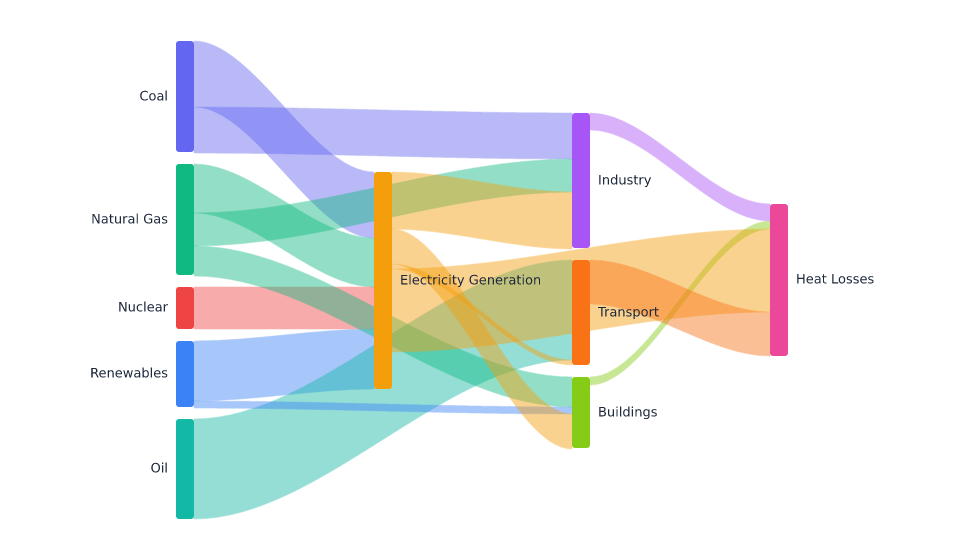
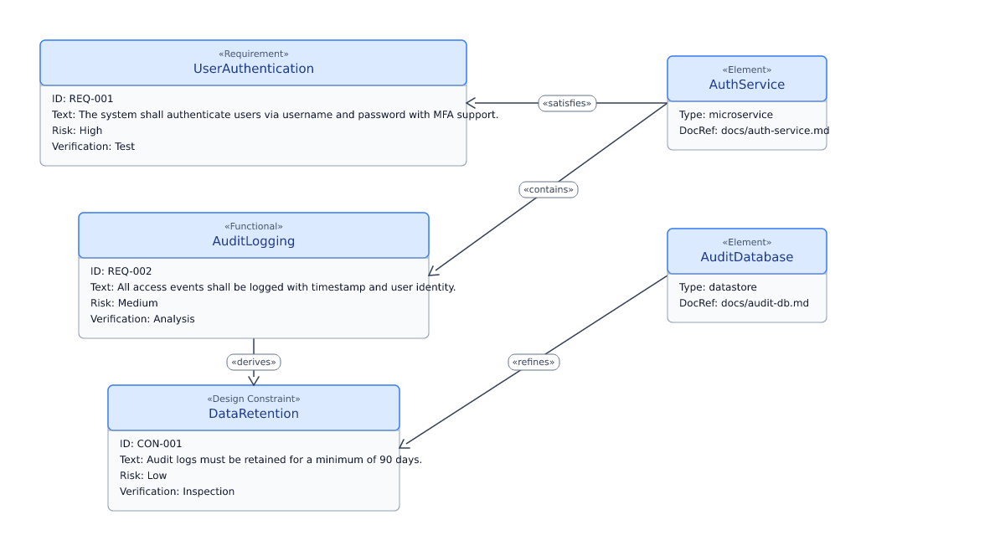
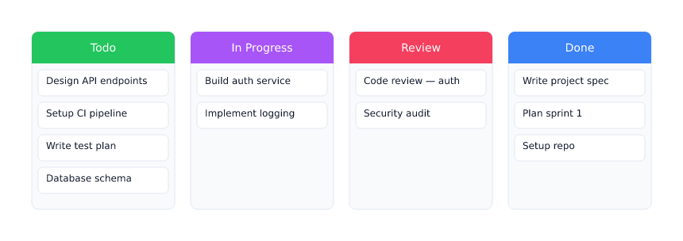
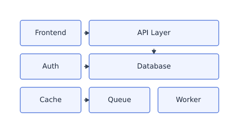
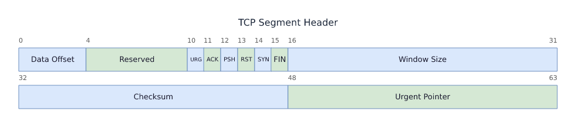
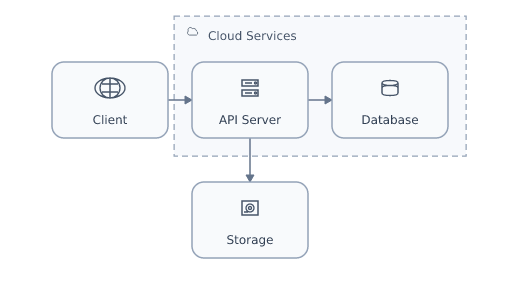

Example 1 · milestones-only
Corporate Milestone Calendar 2026
quarter axis
milestones only
Six numbered milestone circles (T2 shape) across a full year — date label above,
title below. No activity bars. Exercises: quarterly axis ticks, milestone ordinal
numbering, label collision resolution, mixed statuses (done / in-progress / planned).

{kind=link}
Example 2 · open-ended
Open-Ended & Span Activity Behaviours
month axis
ongoing / span
Demonstrates all end-date variants: omitted end (implicitly ongoing → bar to right
edge),
end: ongoing (explicit), span: 2026-Q1 shorthand
(quarter-wide bars), and end: tbd (stub bar). Two tracks; two milestones.

{kind=link}
Example 3 · architecture-evolution
Architecture Evolution 2022–2028
year axis
Yearly axis spanning 7 years, 3 tracks (Backend / Frontend / Infrastructure),
overlapping phases shown as activity bars (done / in-progress / planned). Three
milestones mark phase transitions. Exercises: year-granularity axis, multi-year
sub-lane stacking, long-span bars.

{kind=link}
Example 4 · release-timeline
v3 Release Train — H1 2026
month axis
Monthly axis, 2 tracks (Backend / Frontend), sequential short activities with an
at-risk item (Search API / RC1 milestone). Four release milestones
(Alpha → Beta → RC1 → GA). Exercises: at-risk status colouring, milestone stacking
near date boundaries.

{kind=link}
Example 5 · program-timeline
Project Phoenix — Program Timeline
month axis
Monthly axis, 3 tracks (Discovery / Development / Quality), activities + 5 milestones
including Kick-off, Architecture Approval, Feature Freeze, Launch, and GA.
Exercises: blocked status, milestone track assignment, overlapping
activity date ranges across tracks.

{kind=link}
Example 6 · product-roadmap
2026 Product Roadmap
quarter axis
sub-lanes
Quarterly axis, 4 tracks (Strategy / Platform / Mobile / Analytics), 16 activity
bars with mixed statuses (done / in-progress / at-risk / planned) and progress
fractions, 4 milestones. Mobile track demonstrates sub-lane stacking (iOS v3 and
Android v3 overlap).

{kind=link}
Example 7 · transformation-plan
Digital Transformation 2026–2027
quarter axis
Quarterly axis spanning 8 quarters, 4 workstream tracks (People / Process /
Technology / Data), 13 long-span activity bars with progress indicators, 3
milestones. Exercises: multi-year quarterly axis, wide canvas fill, all status
colours in one document.

{kind=link}
Example 8 · dense-roadmap
H1 2026 — Dense Engineering Roadmap
month axis
sub-lanes
Monthly axis, 3 tracks, 15 activities with intentional overlaps to stress sub-lane
assignment and label placement (Infra: Monitoring Stack + CI/CD overlap; Backend:
User/Billing/Inventory chain; Frontend: Component Library + Routing v2 overlap).
4 milestones crowd the right half.

{kind=link}
Example 9 · feature-rich
Enterprise Transformation Programme
quarter axis
legend + annotations
Full refinement-pass showcase: sections, today marker, period annotation, callout,
explicit legend, mixed milestone/activity statuses, and progress. Exercises the
new rendering pipeline end-to-end in one document. Milestones carry icon hints
(star, check, cloud, calendar, flag).

{kind=link}
Example 10 · icon-showcase
Icon Set Showcase
quarter axis
20 icons
Demonstrates the complete built-in icon set — 20 original geometric glyphs rendered
inside milestone node circles. Covers flag, star, check, x, warning, rocket, target,
calendar, clock, gear, lock, cloud, database, code, milestone, play, bolt, people,
doc, and pin. All icons are deterministic SVG paths.
{kind=link}
Example 11 · our-timeline-numbered
Arc-Around-Node Spine (our-timeline)
month axis
arc spine
The spine threads above and below each node as alternating semicircular arcs —
the defining look of the our-timeline reference theme. Enabled via the
opt-in
axis.nodeWrap: over-under token; three numbered circular nodes
illustrate done, in-progress, and planned statuses with hollow/filled rendering.

{kind=link}
Example 12 · timeline-goals
Timeline & Goals — Discontinuous Axis + Phase Pills
quarter axis
axis break · phases
Recreates a "04 · Timeline & Goals" engineering-roadmap slide: three coloured
phase pills (icon + title + subtitle) on a discontinuous axis —
the dead gap Nov 2025 → Apr 2026 is collapsed with a
// break marker.
Six milestone callouts sit above the axis with date labels and vertical leaders.
Uses the new opt-in axis_breaks IR field and the
roadmap theme's tall pill-shaped bars (36 px, radius 8).

{kind=link}
Example 13 · sequence-rest-auth
Token-Based REST Auth — UML Style
Sequence diagram: Client ↔ Auth Server over two request/response pairs
(POST /auth/token then GET /api/data). Rendered with the
default-sequence theme — plain UML boxes, visible lifelines,
dashed reply arrows, activation bars. Demonstrates the
grammar = semantics half of the two-IR-layer model:
the document captures who talks to whom in what order,
nothing else. Compare with Example 14 (same IR, different theme).

{kind=link}
Example 14 · sequence-rest-auth-bytebytego
Token-Based REST Auth — ByteByteGo Style
Identical IR to Example 13, rendered with the
bytebytego-sequence theme — dark canvas (#111827), colored
icon cards per participant kind, hidden lifelines, and numbered blue step badges
placed just outside each participant card on the arrow. Demonstrates the
theme = style half: the same semantics produce an
entirely different visual presentation without touching the source document.

{kind=link}
Example 15 · sequence-agent-loop
Agent Retry Loop — Fragments & Activation
LLM agent invoking a tool with retry logic: User → Agent → Tool (×2 with
503 → 200). Exercises all three advanced sequence features:
activation bars (Agent active for orders 2–6),
combined fragments (
loop + nested opt),
and a self-message (reflect, order 4) rendered as
a 3-segment right-angle loop. Default UML theme.

{kind=link}
Example 16 · sequence-agent-loop-bytebytego
Agent Retry Loop — ByteByteGo Style
Same agent-loop IR as Example 15 rendered with the
bytebytego-sequence theme. Verifies that fragments
(dark-background boxes), activation bars (visible on the dark canvas),
and self-message loops all remain legible under the dark infographic style.
Numbered blue badges (1–7) appear outside each participant card, clear of
the centered message labels.

{kind=link}
Example 17 · flow-rag-pipeline
RAG Pipeline — Flow Grammar
Seven-node retrieval-augmented generation pipeline rendered with the
Flow Grammar (node-link, layered left→right layout).
Nodes: question input → retrieve → re-rank / direct-match (branch, column 2) →
augment → LLM → answer. Exercises: cycle detection, animated dashed edges,
status fills (success/active), branch stacking, and the
defaultFlowTheme blue palette.

{kind=link}
Example 18 · tree-document
Document Structure — Tree Grammar (Default)
Ten-node document hierarchy (root + 3 chapters + 6 sections) rendered with the
Tree Grammar using the default-tree theme —
white canvas, indigo node palette, elbow connectors, BJ+L tidy-tree layout.
Demonstrates the grammar = semantics half:
the document captures only structure and sibling order.
Compare with Example 19 (same IR, dark theme).

{kind=link}
Example 19 · tree-document-dark
Document Structure — Tree Grammar (Dark)
Identical IR to Example 18, rendered with the
dark-tree theme — dark navy canvas (#111827), teal accent
node fills (#0d9488 root / #0f766e chapters / #134e4a sections), bright cyan
edges (#2dd4bf), straight connectors instead of elbow. Demonstrates the
theme = style half: the same tree semantics produce
an entirely different visual presentation without touching the source document.

{kind=link}
Example 20 · poster-rag-architecture
RAG Architecture Deep Dive — Composition Layer
A multi-panel infographic poster built with the Composition Layer:
four grammars assembled into a single 2×2 grid canvas.
Top-left: Flow — 7-node RAG retrieval pipeline.
Top-right: Tree — knowledge base taxonomy (3 chapters, 6 sections).
Bottom-left: Sequence — retrieval request/response (4 participants, 6 messages).
Bottom-right: Stat — 98.7% retrieval accuracy callout.
Demonstrates
cellVAlign: top and cellHAlign: center alignment
tokens that anchor short panels near the top, eliminating floating whitespace in mixed
tall/short rows.

{kind=link}
Example 21 · feature-rich-bytebytego
Enterprise Roadmap — ByteByteGo Dark Theme
quarter axis
dark theme
The same feature-rich timeline IR rendered with the new
bytebytego dark theme — dark canvas, vivid accent bars — matching the
dark flow / tree / sequence palette for a cohesive dark look across all four grammars
(grammar = semantics, theme = style).

{kind=link}
Example 22 · sequence-alt-multicompartment
Sequence — alt Multi-Guard Fragment
sequence
alt fragment
A Sequence diagram whose
alt combined fragment has
multiple sub-compartments — [success], [not found],
[else] — separated by dashed dividers, each with its own guard label.

{kind=link}
Example 23 · poster-rag-architecture-dark
RAG Architecture — Dark Poster (Composition)
composition
dark theme
The same multi-panel Composition poster as Example 20, rendered in a
cohesive dark / ByteByteGo style — each panel (flow, tree, sequence,
stat) uses its dark theme on the
dark-poster composition canvas, tightened
with content-driven row sizing.

{kind=link}
Example 24 · mermaid-flowchart
Mermaid In, Prettier Out — Front-End (Tier 0)
mermaid
dark theme
A real Mermaid
flowchart (CI/CD pipeline) parsed by our
new Mermaid front-end into the flow IR and rendered through our engine in the
dark-flow theme — node shapes, labeled / dotted / back edges, all
from Mermaid source. The pitch: paste Mermaid, get cleaner, themeable output.
First step of full Mermaid-superset compatibility.

{kind=link}
Example 25 · mermaid-sequence
Mermaid Sequence — ByteByteGo Theme
mermaid
sequence
A real Mermaid
sequenceDiagram (JWT auth flow) parsed by our front-end
into the sequence IR and rendered in the bytebytego-sequence theme:
icon-card participants, numbered step badges, activation bars, and
alt/else, loop, opt fragments —
all from Mermaid source, and far cleaner than Mermaid's default.

{kind=link}
Example 26 · mermaid-gantt
Mermaid Gantt — Roadmap Theme (Tier 0)
mermaid
gantt
A real Mermaid
gantt (Platform Modernisation Roadmap) parsed by our
front-end into the timeline IR and rendered in the roadmap theme:
four sections (Infrastructure, Backend, Frontend, Release), done/active
status bars, after dependency chains, and crit milestone markers —
all from Mermaid source, far cleaner than Mermaid's default Gantt output.

{kind=link}
Example 27 · mermaid-timeline
Mermaid Timeline — Vertical Spine (Tier 0)
mermaid
timeline
A real Mermaid
timeline (History of Programming Languages) parsed by our
front-end into the timeline IR and rendered in the our-timeline theme with
vertical-spine layout: named sections (Foundations, Systems Era, Modern),
year-labelled period milestones, and one activity bar per event — all from Mermaid source.

{kind=link}
Example 28 · mermaid-mindmap
Mermaid Mindmap — Dark Tree Theme (Tier 0)
mermaid
mindmap
A real Mermaid
mindmap (Distributed Systems Concepts) parsed by our
front-end via indentation-based hierarchy into the Tree IR and rendered in the
dark-tree theme: 4 branches (Consensus, Communication, Storage, Observability),
multi-level nesting, ::icon() directives — all from Mermaid source,
using the Buchheim–Jünger–Leipert tidy-tree layout engine.

{kind=link}
Example 29 · mermaid-class
Mermaid Class Diagram — E-Commerce Domain Model (Tier 1)
mermaid
classDiagram
A real Mermaid
classDiagram (E-Commerce Domain Model) parsed by our Tier 1
front-end into the Class Grammar IR and rendered with UML compartment layout:
name/attributes/methods compartments, 6 UML relationship types (inheritance, realization,
composition, aggregation, association, dependency) with correct arrowhead markers drawn as
path primitives. Theme: default-class.

{kind=link}
Example 30 · mermaid-state
Mermaid State Diagram — Order Payment Lifecycle (Tier 1)
mermaid
stateDiagram
A real Mermaid
stateDiagram-v2 (Order & Payment Lifecycle) parsed by our
Tier 1 front-end into the State Grammar IR: rounded-rect states, pseudostates (filled
start circle, bullseye end, fork bar, choice diamond), labeled transitions as open-arrowhead
paths, and one composite state. Theme: default-state.

{kind=link}
Example 31 · mermaid-er
Mermaid ER Diagram — E-Commerce Schema (Tier 1)
mermaid
erDiagram
A real Mermaid
erDiagram (Customer/Order/LineItem/Product schema) parsed by
our Tier 1 front-end into the ER Grammar IR: entity boxes with type|name|key attribute
compartments, crow's-foot cardinality endpoints (zero-or-one, exactly-one, zero-or-many,
one-or-many) as path primitives, identifying vs non-identifying relationship lines.
Theme: default-er.

{kind=link}
Example 32 · mermaid-c4
Mermaid C4 Context — Internet Banking System (Tier 1)
mermaid
C4Context
A real Mermaid
C4Context (Internet Banking System) parsed by our Tier 1
front-end into the C4 Grammar IR: people, internal/external systems, nested boundaries,
technology-tagged relationships, and dashed enterprise/system scopes rendered through the
deterministic software architecture layout. Theme: default-c4.

{kind=link}
Example 33 · mermaid-pie
Mermaid Pie Chart — Programming Language Popularity 2026 (Tier 2)
mermaid
pie
A real Mermaid
pie chart parsed by our Tier 2 chart grammar front-end into
the Chart Grammar IR and rendered with the grammar-of-graphics layout engine: theta scale
maps values to sector angles, arc sectors as SVG path primitives, priority-based label
collision avoidance (large slices inside, small slices outside with leader lines), and
a legend. Theme: default-chart.

{kind=link}
Example 34 · mermaid-xychart
Mermaid XY Chart — Monthly Revenue vs Target 2026 (Tier 2)
mermaid
xychart-beta
A real Mermaid
xychart-beta chart parsed by our Tier 2 chart grammar front-end:
band scale for categorical x-axis, linear scale with nice domain for y-axis, bar marks (Rect
primitives) and line marks (Path polyline) overlaid on the same plot, deterministic tick
generation with collision avoidance on x-labels, gridlines behind marks.
Theme: default-chart.

{kind=link}
Example 35 · mermaid-quadrant
Mermaid Quadrant Chart — Campaign Reach vs Engagement Analysis (Tier 2)
mermaid
quadrantChart
A real Mermaid
quadrantChart rendered through the Tier 2 chart grammar: a square plot
with lightly tinted quadrants, center split lines, explicit low/high axis semantics, and deterministic
point-label placement around campaign markers even when many labels cluster near the center.
Theme: default-chart.

{kind=link}
Example 36 · mermaid-radar
Mermaid Radar Chart — Developer Profile Comparison (Tier 2)
mermaid
radar-beta
A real Mermaid
radar-beta chart parsed into the Chart Grammar IR: concentric polygon rings,
spoke axes with outward label anchoring, translucent series polygons, vertex dots, and an internal legend
for multi-series comparison. Theme: default-chart.

{kind=link}
Example 37 · mermaid-journey
Mermaid User Journey — E-commerce Customer Journey 2026 (Tier 3)
mermaid
journey
A real Mermaid
journey diagram parsed into the Journey Grammar IR: ordered sections
as labeled horizontal bands, tasks as score-colored circles on a spine, score→color ramp
(red=poor, green=excellent), actor chips below each task, and an overall actor legend.
Theme: default-journey.

{kind=link}
Example 38 · mermaid-gitgraph
Mermaid Git Graph — Development Branching Model (Tier 3)
mermaid
gitGraph
A real Mermaid
gitGraph rendered through the Tier 3 grammar: branch lanes as
horizontal rows, commits as colored dots in chronological order, merge curves as Bézier arcs
between lanes, tags as labeled chips above commits, HIGHLIGHT/REVERSE commit type glyphs,
and a branch-name legend on the left. Theme: default-gitgraph.

{kind=link}
Example 39 · mermaid-sankey
Mermaid Sankey — Global Energy Flow 2026 (Tier 3)
mermaid
sankey-beta
A real Mermaid
sankey-beta diagram rendered through the Tier 3 Sankey grammar:
nodes ranked into columns by longest-path topological layering, node bars sized proportionally
via a closed-form value→pixel scale, smooth cubic Bézier ribbon flows colored by source node
with translucent fill, and edge-aware non-clipping labels outside each bar. An energy-flow
dataset shows primary sources (Coal, Gas, Oil, Nuclear, Renewables) flowing through
Electricity Generation to end-use sectors and heat losses. Theme: default-sankey.

{kind=link}
Example 40 · mermaid-requirement
Mermaid Requirement Diagram — Auth System Requirements (Tier 3)
mermaid
requirementDiagram
A real Mermaid
requirementDiagram rendered through the Tier 3 Requirement grammar:
compartment boxes (stereotype line + bold name + attribute list) for requirements and elements,
directed edges with centered «kind» pill labels (satisfies, derives, refines, contains).
Supports all five typed variants (functionalRequirement, designConstraint, etc.) and both
requirement and element block types. Theme: default-requirement.

{kind=link}
Example 41 · mermaid-kanban
Mermaid Kanban Board — Sprint Board 2026 (Tier 3)
mermaid
kanban
A real Mermaid
kanban diagram rendered through the Tier 3 Kanban grammar:
columns side-by-side with colored header bands (Todo=green, In Progress=purple, Review=blue, Done=pink),
stacked rounded card boxes beneath each header, text wrapping for long card labels, and priority
badge annotations from @{} metadata. Indentation-aware parser handles both
id[label] and bare-label card syntax. Theme: default-kanban.

{kind=link}
Example 42 · mermaid-block
Mermaid Block Diagram — Service Topology (Tier 3)
mermaid
block-beta
A real Mermaid
block-beta diagram rendered through the Tier 3 Block grammar:
fixed-column row-major placement, rectangular + rounded + circle + diamond block shapes,
column spans, optional group containers, and straight connector arrows with labels.
Theme: default-block.

{kind=link}
Example 43 · mermaid-packet
Mermaid Packet Diagram — TCP Segment Header (Tier 3)
mermaid
packet-beta
A real Mermaid
packet-beta diagram rendered through the Tier 3 Packet grammar:
32-bit rows with boundary labels, wrapped fields that split across row edges, centered field
labels, and deterministic packet-header layout. Theme: default-packet.

{kind=link}
Example 44 · mermaid-architecture
Mermaid Architecture Diagram — Cloud Service Topology (Tier 3)
mermaid
architecture-beta
A real Mermaid
architecture-beta diagram rendered through the Tier 3 Architecture grammar:
service nodes with built-in infrastructure icons, dashed group containers with icon + title headers,
junction points, and orthogonal connector routing driven by explicit port-side hints.
Theme: default-architecture.

{kind=link}
{kind=link}
{kind=link}
{kind=link}
{kind=link}
{kind=link}
{kind=link}
{kind=link}
{kind=link}
{kind=link}
{kind=link}
{kind=link}
{kind=link}
{kind=link}
{kind=link}
{kind=link}
{kind=link}
{kind=link}
{kind=link}
{kind=link}
{kind=link}
{kind=link}
{kind=link}
{kind=link}
{kind=link}
{kind=link}
{kind=link}
{kind=link}
{kind=link}
{kind=link}
{kind=link}
{kind=link}
{kind=link}
{kind=link}
{kind=link}
{kind=link}
{kind=link}
{kind=link}
{kind=link}
{kind=link}
{kind=link}
{kind=link}
{kind=link}
{kind=link}
{kind=link}
{kind=link}
{kind=link}
{kind=link}
{kind=link}
{kind=link}
{kind=link}
{kind=link}
{kind=link}
{kind=link}
{kind=link}
{kind=link}
{kind=link}
{kind=link}
{kind=link}
{kind=link}
{kind=link}
{kind=link}
{kind=link}